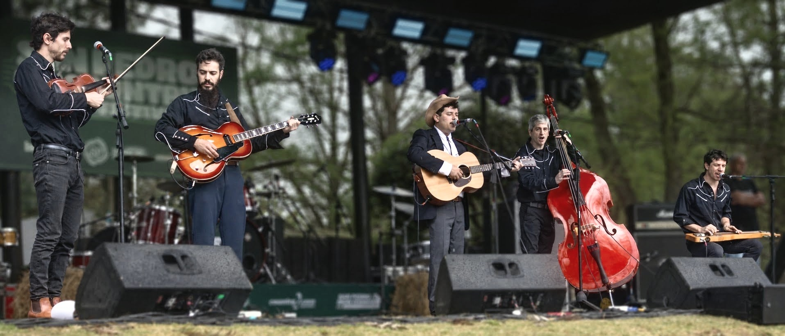

PRIMER BOCETO Foto de la banda por incorporar
La música sigue acáSobre
Rodeos.
Un punto de encuentro.
Una forma de hacer música.
Estamos preparando este espacio para compartir nuestra historia, presentar a los integrantes y contar qué nos reúne alrededor del honky-tonk.
Nuestras
influencias.
Los discos, las canciones y los artistas
que nos traen hasta acá.
Las voces y los sonidos que nos acompañan.
Una selección de nuestra playlist Rodeos temas.
Todo empieza
por una canción.
Escuchá los artistas de nuestra selección en Spotify.
Fuentes de las fotografías
Retratos de Wikimedia Commons y perfiles de Spotify. Los nombres del collage enlazan a los artistas en Spotify.
- The Honkytonk Wranglers — Spotify · perfil del artista
- Hank Williams — Wikimedia · ficha y créditos de la fotografía
- Lefty Frizzell — Wikimedia · ficha y créditos de la fotografía
- Bob Wills & His Texas Playboys — Wikimedia · ficha y créditos de la fotografía
- Patsy Cline — Wikimedia · ficha y créditos de la fotografía
- Elizabeth Cotten — Spotify · perfil del artista
- Hank Williams III — Foto: Bill Ebbesen, CC BY-SA 3.0; encuadre de visualización adaptado. Wikimedia · ficha y créditos de la fotografía
- Johnny Cash — Spotify · perfil del artista
- Hank Snow — Wikimedia · ficha y créditos de la fotografía
- Eddy Arnold — Wikimedia · ficha y créditos de la fotografía
- Webb Pierce — Spotify · perfil del artista
- Jean Shepard — Wikimedia · ficha y créditos de la fotografía
- Hank Thompson — Wikimedia · ficha y créditos de la fotografía
- Red Foley — Wikimedia · ficha y créditos de la fotografía
- Jimmy Wakely — Wikimedia · ficha y créditos de la fotografía
- Santo & Johnny — Spotify · perfil del artista
Nos vemos
en el escenario.
Cada fecha, una historia.
Un recorrido por nuestras presentaciones.
Próximas fechas
Las próximas presentaciones se anunciarán acá.
Historial de presentaciones
Estamos reuniendo las fechas, los lugares y los recuerdos de nuestros shows.
¿Armamos
una fecha?
Presentaciones, propuestas
o simplemente un saludo.
Pronto compartiremos nuestros canales de contacto.